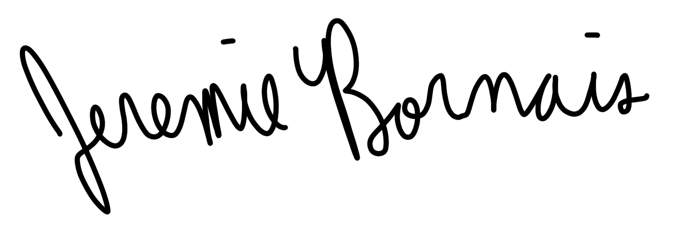

As a seasoned programmer with experience in software development, I hope to join your team in the role of . I am seeking an opportunity to apply my skills in back-end development, object oriented programming, and user experience, as well as utilize my leadership acumen and problem solving skills to create meaningful solutions. I believe that my prior work and volunteer experience, and my hard skill set would be assets if selected for this position.
Currently, I am working towards an Honours Bachelor’s degree in Computer Science from the University of Windsor. I continue to add to my repertoire of programming skills, working in Python, Java, C, JavaScript, and Ruby. As a Research Assistant, I have had the opportunity to apply these skills in a professional setting, leading development of a full web application for Dr. Drew Marquardt for the analysis and visualization of test data. In doing so, I have encountered and tackled various problems and made back-end design decisions to improve performance significantly.
Moreover, during my time at the University of Windsor I have engaged in several leadership opportunities on campus. Namely, I was elected the Vice President of the Computer Science Society, representing the needs and wishes of over 500 students. I have also been involved in 10 hackathon competitions, where I used my problem solving skills to win four separate awards, one being for first place. This experience prompted me to co-found two local hackathons, where I showed leadership acumen by leading development of both event websites, instructing volunteers, and maintaining relationships with sponsors.
I look forward to speaking with you in the future about my qualifications, experience, and ideas, and how they relate to . Feel free to contact me via phone or email at your earliest convenience. I thank you for your time and consideration.
Sincerely,

Jeremie Bornais